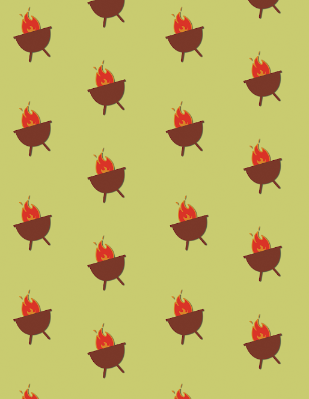

|
Hello, world. My name is Christian Paredes.
About Me
I am right now a high school senior at my school, Bronx Early College Academy, i am right now trying to complete all the requiremnets needed to graduate. I would like to go to a college that has a software engineer program so I can get a degree on this subject. I would like to do so becuase of how intresting it is to code and create things.
Experience
- My work experience includes
- My volunteer experience includes being a part of 2 park clean-ups.
- My soft skills include Independence, active listening. []
- My hard skills include knowing python and html []
|
Interests
| My interests include chess, coding, and im now beginning to go into carpenting. |
Chess
| like the game chess because how it is a strategy game. I remember playing chess in middle school and how I beat the students in the club. Unfortunately, I took a break from the game because of the things I had to do and a lack of desire. Now I am a rusty chess player trying to get back into the game and hopefully be a better chess player than I was before and teach others to play chess. I am right now laying chess in a well-known chess website .
If you want to play with me, you can find me as christianparedes000. |
[Title e.g. Photos, Creativity, etc.]
Visual Design Portfolio
.png) |
 |
 |
| Piece 1: With this piece, I wanted to show my liking of vintage era which is inspried by how todays world and how uncommon it is and how intresting it is to see and use something that is unique and different compared to modern day products. |
[Piece 2: In this piece I tried to capture the pure opposite of penguin-ness. The design was especially challenging here because representing objects along a four-dimensional plane proved to require more string theory than I had originally hoped.] |
[Piece 3: This piece was inspired by nights spent along the Oregon Trail during the zombie apocalypse. In the multiplicity of materials used, I tried to symbolize the lingering interposition of the Freudian superego along Jungian archetypes throughout Viennese architecture.] |
|


{kind=link}